数字逻辑与计算单元设计
晶体管与逻辑门电路基础¶
MOSFET 晶体——现代芯片的基石¶
- n 型半导体：半导体内富含 自由电子
- p 型半导体：富含没有电子的 "空穴"


- MOSFET 结的概念——珊极（gate），漏极（drain）和源极（source）


- MOSFET 的制造过程总结：

NMOS 和 PMOS¶


经典静态逻辑电路¶
PUN 和 PDN¶
NMOS、PMOS 可以组成 PDN（Pull-Down Network）和 PUN（Pull-Up Network）。
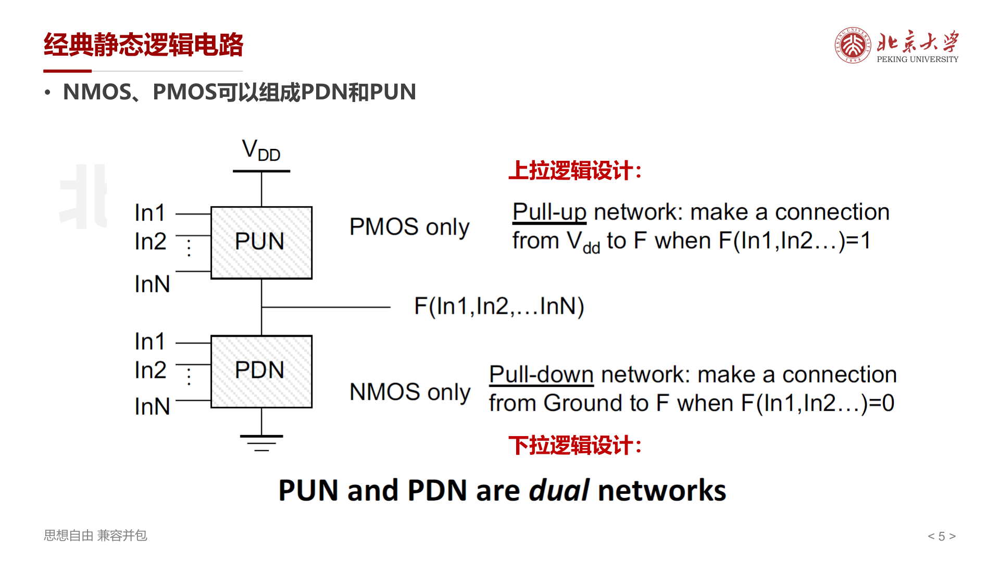
PUN (Pull-Up Network) — 上拉网络
- 由 PMOS 晶体管组成
- 连接在 VDD（电源）和输出节点之间
- 当 \(F(\text{In1}, \text{In2}, \ldots) = 1\) 时，将输出连接到 \(V_{DD}\)
PDN (Pull-Down Network) — 下拉网络
- 由 NMOS 晶体管组成
- 连接在输出节点和 GND（地）之间
- 当 \(F(\text{In1}, \text{In2}, \ldots) = 0\) 时，将输出连接到 GND
PUN 和 PDN 互为对偶网络（dual networks）：
- PUN 导通时 PDN 截止，反之亦然
- 串联 NMOS（PDN 中实现 AND）对应并联 PMOS（PUN 中实现同一逻辑的补）
- 并联 NMOS（PDN 中实现 OR）对应串联 PMOS
NAND 门电路¶
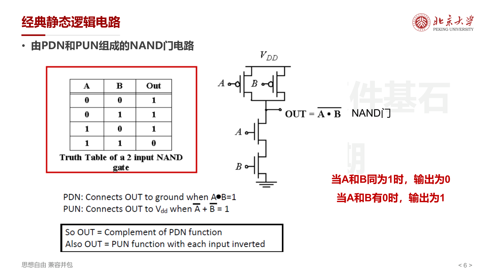
NAND 门 \(\text{OUT} = \overline{A \cdot B}\) ：
- 当 A 和 B 同为 1 时，输出为 0（PDN 导通，NMOS 串联）
- 当 A 和 B 有 0 时，输出为 1（PUN 导通，PMOS 并联）
PDN: 当 \(A \cdot B = 1\) 时将 OUT 连接到 GND
PUN: 当 \(\overline{A} + \overline{B} = 1\) 时将 OUT 连接到 \(V_{DD}\)
复杂静态逻辑电路¶
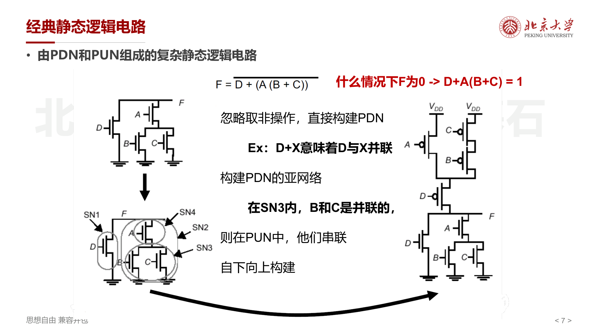
以 \(F = \overline{D + A(B + C)}\) 为例：
- 什么情况下 F 为 0？当 \(D + A(B + C) = 1\) 时
- 构建 PDN ：忽略取非操作，直接根据逻辑表达式构建
- \(D + X\) 意味着 D 与 X 并联
- \(A \cdot X\) 意味着 A 与 X 串联
- 构建 PUN ：PDN 的对偶网络
- PDN 中并联的，在 PUN 中串联
- PDN 中串联的，在 PUN 中并联
- 自下向上构建
简单 1-bit 加法器电路¶
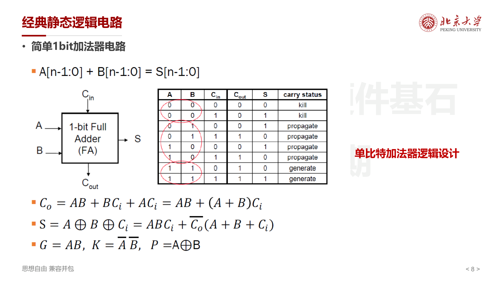
\(A[n-1:0] + B[n-1:0] = S[n-1:0]\)
单比特全加器（Full Adder）的关键公式：
进位状态（carry status）：
- Generate （\(G = AB\)）：\(C_{out} = 1\)，与 \(C_{in}\) 无关
- Propagate （\(P = A \oplus B\)）：\(C_{out} = C_{in}\)，传播进位
- Kill （\(K = \overline{A} \cdot \overline{B}\)）：\(C_{out} = 0\)，与 \(C_{in}\) 无关
全加器的晶体管实现共需 28 个晶体管 ：
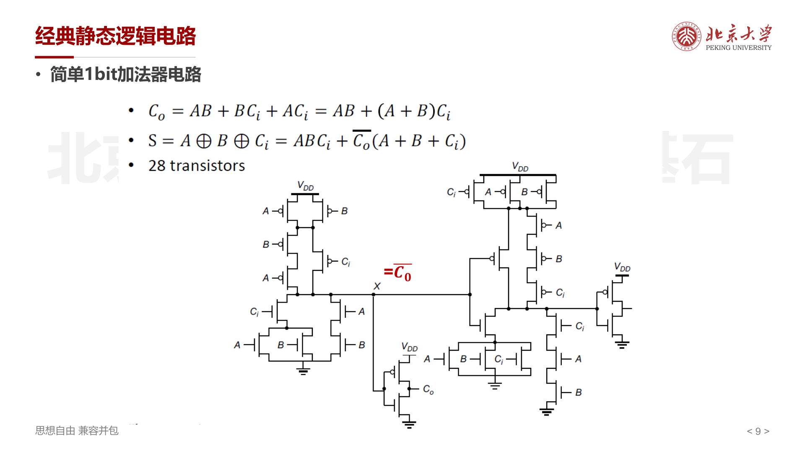
电路延迟分析与功耗分析¶
什么是电路的延迟¶
以 Inverter 反相器为例：
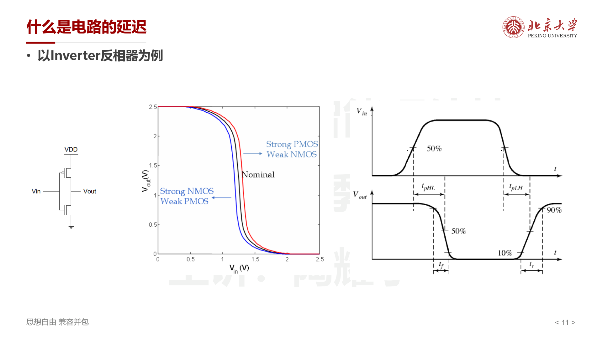
- \(t_{pHL}\) ：输出从高到低的传播延迟（50% 点测量）
- \(t_{pLH}\) ：输出从低到高的传播延迟
- \(t_f\) ：下降时间（90% → 10%）
- \(t_r\) ：上升时间（10% → 90%）
一阶 RC 延迟分析¶
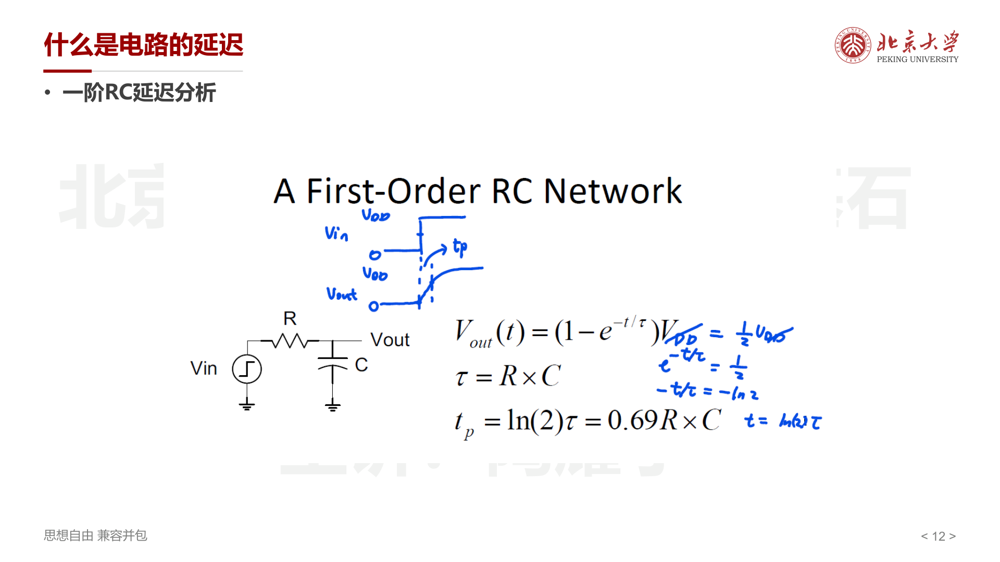
对于一阶 RC 网络：
其中时间常数 \(\tau = R \times C\) 。当输出达到 50% \(V_{DD}\) 时：
反相器延迟¶
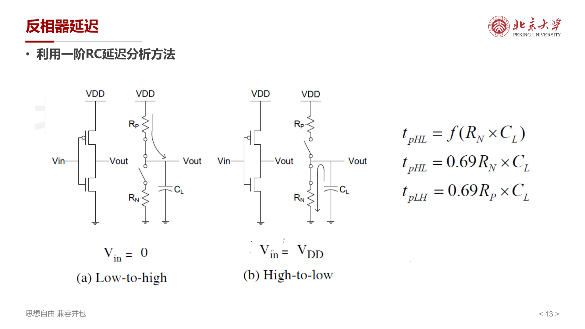
利用一阶 RC 模型分析反相器：
- High-to-Low （\(V_{in} = V_{DD}\)）：NMOS 导通，\(t_{pHL} = 0.69 R_N \times C_L\)
- Low-to-High （\(V_{in} = 0\)）：PMOS 导通，\(t_{pLH} = 0.69 R_P \times C_L\)
降低延迟的设计方法¶
- 降低电容 C ：版图紧凑，布局合理；保持较短走线 & 减少 diffusion routing
- 降低电阻 R（增加晶体管尺寸） ：需避免 self-loading，否则会导致寄生电容增大
- 增加电源电压 ：同时会影响可靠性与功耗，因而一般不采用
输入 Pattern 对延迟的影响¶
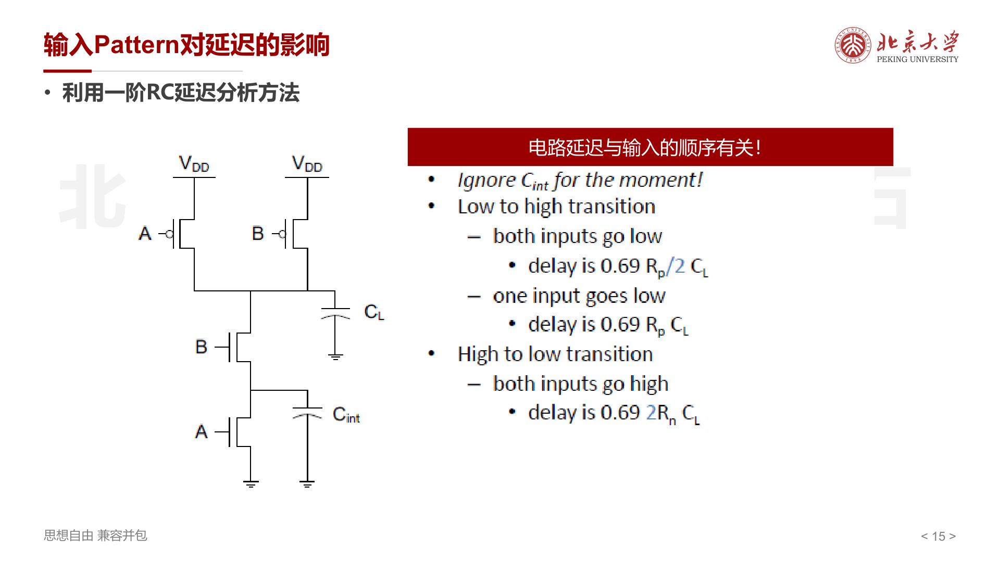
电路延迟与输入的顺序有关！以 NAND 门（忽略 \(C_{int}\)）为例：
- Low-to-High 转换 ：
- 两个输入都变低：延迟为 \(0.69 \frac{R_p}{2} C_L\)（PMOS 并联，电阻减半）
- 一个输入变低：延迟为 \(0.69 R_p C_L\)
- High-to-Low 转换 ：
- 两个输入都变高：延迟为 \(0.69 \cdot 2R_n \cdot C_L\)（NMOS 串联，电阻翻倍）
利用 Transistor Ordering 提升逻辑速度¶
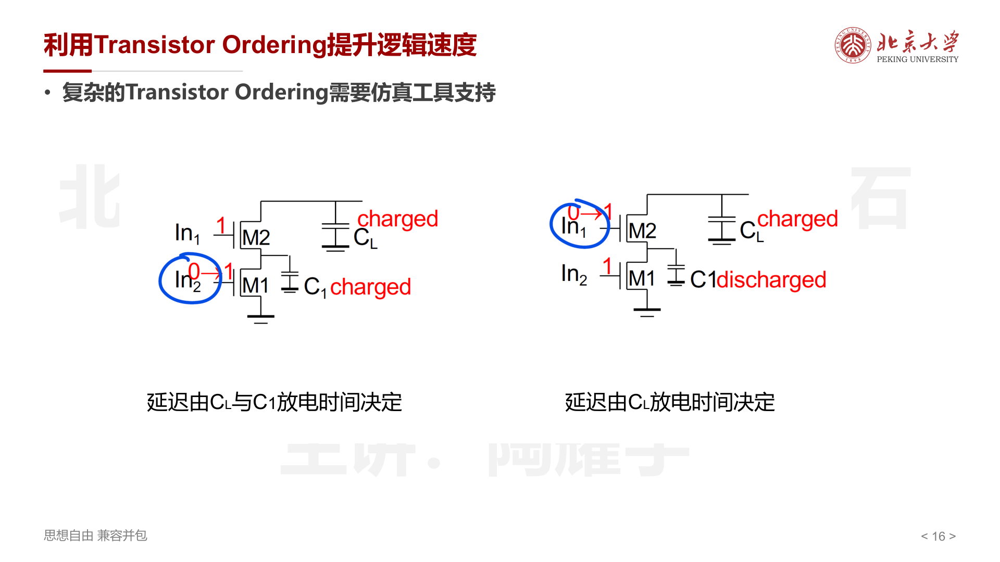
当串联晶体管的输入到达顺序不同时，延迟也不同：
- 较晚到达的信号放在靠近输出端的晶体管 ：此时内部电容 \(C_1\) 已被提前放电，延迟仅由 \(C_L\) 放电决定
- 较晚到达的信号放在远离输出端 ：\(C_L\) 和 \(C_1\) 都需要放电，延迟更大
Elmore Delay 模型¶
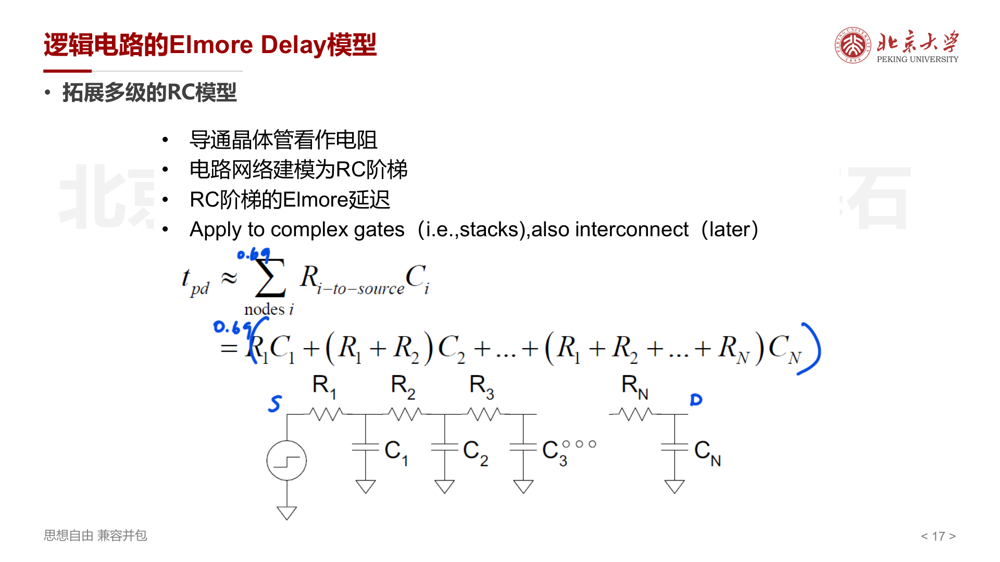
将导通晶体管看作电阻，电路网络建模为 RC 阶梯（RC ladder），Elmore 延迟公式为：
适用于复杂门电路（如晶体管堆叠）和互连线的延迟估计。
逻辑电路的 Transistor Sizing¶
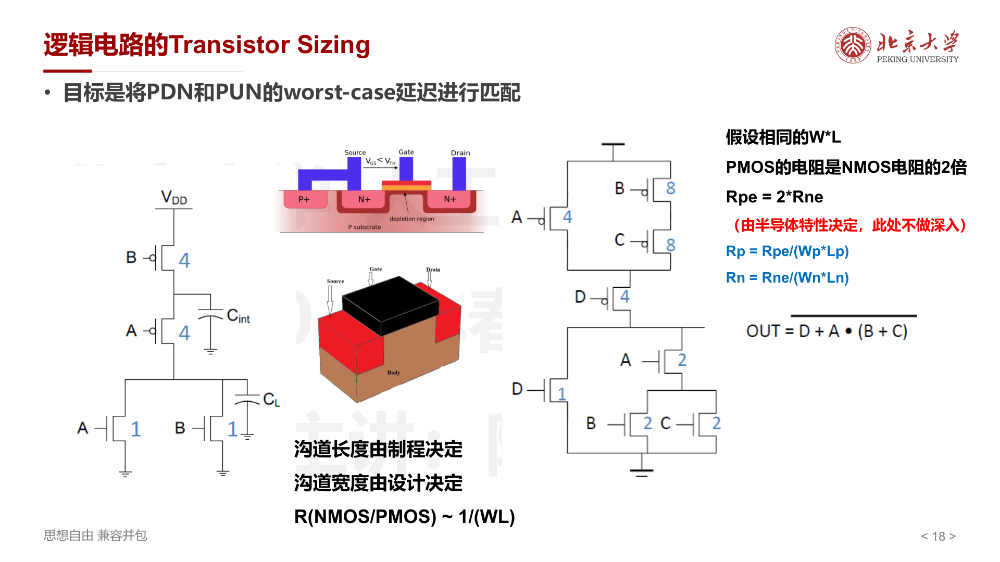
目标是将 PDN 和 PUN 的 worst-case 延迟进行匹配。
- 沟道长度由制程决定，沟道宽度由设计决定
- \(R(\text{NMOS/PMOS}) \sim \frac{1}{W \cdot L}\)
- 假设相同的 \(W \times L\) ，PMOS 的电阻是 NMOS 电阻的 2 倍 ：\(R_{pe} = 2 R_{ne}\)（由半导体载流子迁移率决定）
因此在设计中，PMOS 的宽度通常是 NMOS 的 2 倍，以匹配上拉和下拉延迟。对于串联晶体管，需要按串联级数成倍增大宽度。
逻辑电路功耗¶
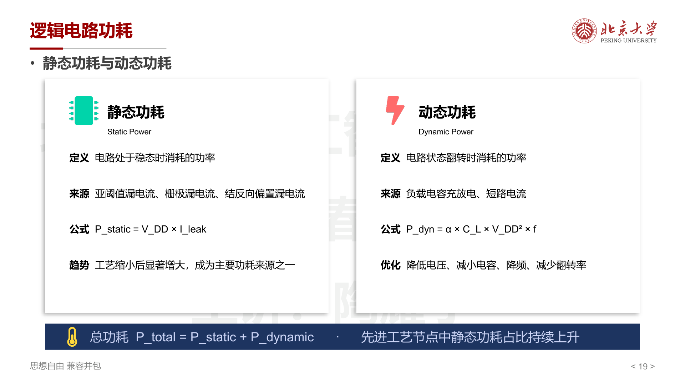
| 静态功耗 | 动态功耗 | |
|---|---|---|
| 定义 | 电路处于稳态时消耗的功率 | 电路状态翻转时消耗的功率 |
| 来源 | 亚阈值漏电流、栅极漏电流、结反向偏置漏电流 | 负载电容充放电、短路电流 |
| 公式 | \(P_{static} = V_{DD} \times I_{leak}\) | \(P_{dyn} = \alpha \cdot C_L \cdot V_{DD}^2 \cdot f\) |
| 优化 | 先进工艺节点中占比持续上升 | 降低电压、减小电容、降频、减少翻转率 \(\alpha\) |
总功耗：\(P_{total} = P_{static} + P_{dynamic}\)
动态功耗的能量分析¶
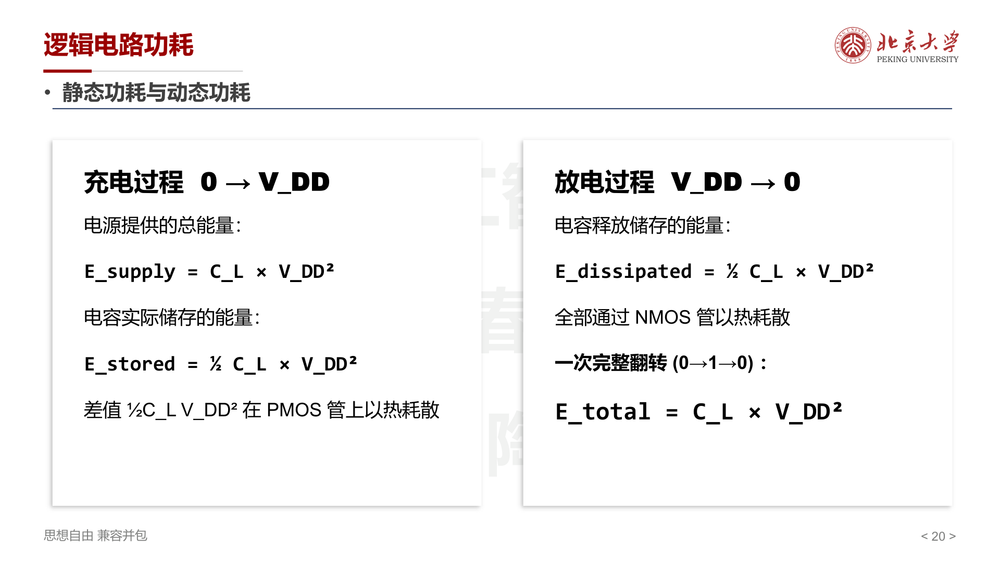
充电过程 \(0 \to V_{DD}\) ：
- 电源提供总能量：\(E_{supply} = C_L \cdot V_{DD}^2\)
- 电容实际储存：\(E_{stored} = \frac{1}{2} C_L \cdot V_{DD}^2\)
- 差值 \(\frac{1}{2} C_L V_{DD}^2\) 在 PMOS 管上以热耗散
放电过程 \(V_{DD} \to 0\) ：
- 电容释放的 \(\frac{1}{2} C_L \cdot V_{DD}^2\) 全部通过 NMOS 管以热耗散
一次完整翻转（\(0 \to 1 \to 0\)）总耗能：\(E_{total} = C_L \cdot V_{DD}^2\)
数据量化与逻辑单元设计¶
- 原码，反码，补码
计概和 ics 都有，不再写了
- 浮点数，IEEE-754 标准
计算方法和 ics 都有，不写了